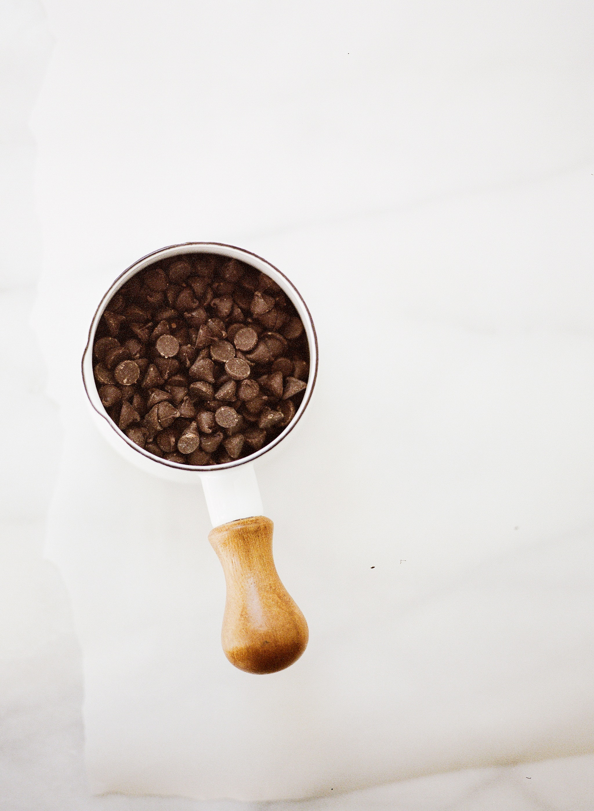
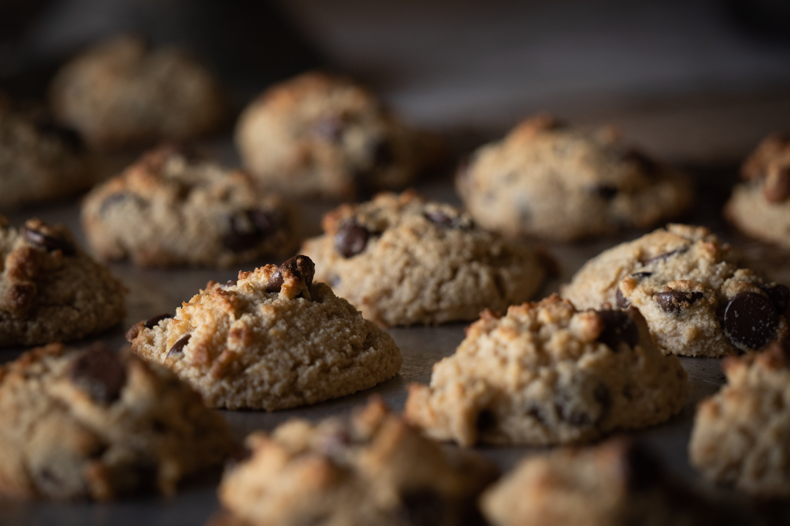
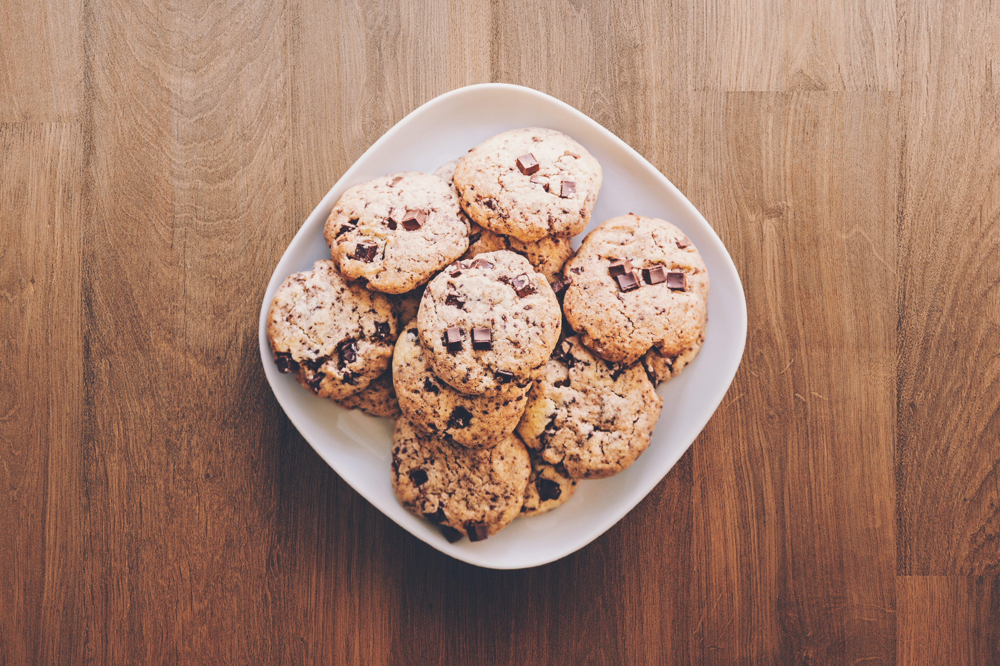

This site offers an interactive slideshow on the ins and outs of chocolate chip cookies. Starting from scratch and ending with deliciousness..you will be sure to have a recipe for success!
Press the button below to begin.
Gather Ingredients
Gather the following:
1/2 cup (113 g) butter
1/2 cup (99 g) granulated sugar
1/4 cup (54 g) brown sugar packed
2 teaspoons vanilla extract
1 large egg
1 3/4 cups (210 g) all-purpose flour
1/2 teaspoon baking soda
1/2 teaspoon kosher salt
1 cup (170 g) semisweet chocolate chips
Next, preheat your oven to 350 degrees F .
Microwave the butter for about 40 seconds. Then, mix the melted product with both sugars in the respective amounts.

Stir in vanilla and egg until incorporated.Add the flour, baking soda, and salt. Finally, add your chocolate chips! You can add as many or few as you desire.

Mix dough until just combined. Dough should be soft and a little sticky but not overly sticky. Scoop out 1.5 tablespoons of dough (medium cookie scoop) and place on baking sheet.

Bake for 7-10 minutes. Let cool for at least 5 minutes. Most importantly, enjoy!